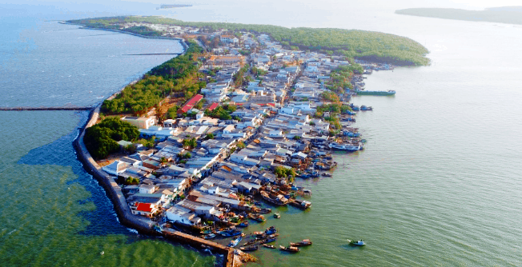
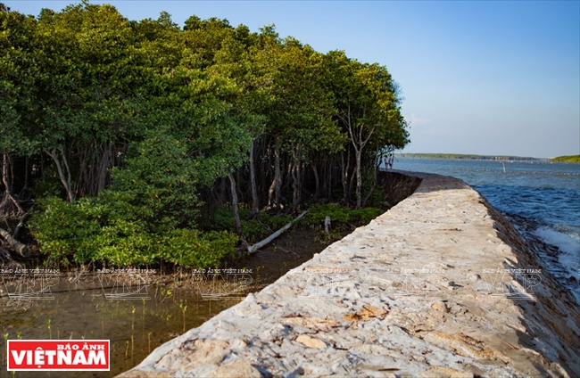
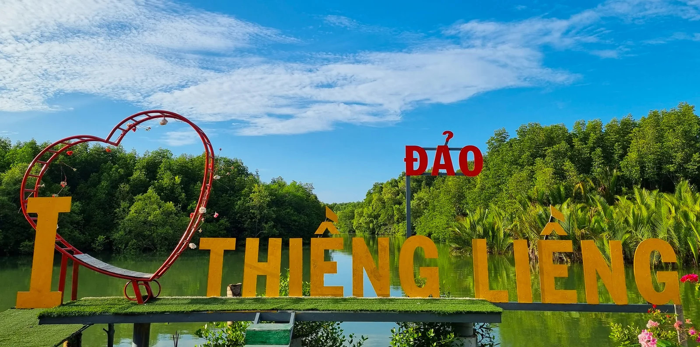

Giới thiệu
Xã đảo Thạnh An thuộc Thành phố Hồ Chí Minh, nằm cách trung tâm thành phố khoảng 70km về phía Đông Nam, cách Cần Thạnh khoảng 8km đường biển. Xã nằm giữa hai con sông lớn là sông Thị Vải và sông Lòng Tàu. Đây là hòn đảo duy nhất có người sinh sống, xã gồm 3 ấp: Thạnh Hòa, Thạnh Bình và Thiềng Liềng. Trong đó, ấp Thạnh Hòa và Thạnh Bình nằm chung trên hòn đảo chính (đảo Thạnh An), còn ấp Thiềng Liềng là một ấp đảo riêng biệt, nổi tiếng với nghề làm muối truyền thống.
Bạn đã từng nghe đến hoặc ghé thăm hòn đảo bình dị này chưa? Nơi đây nổi bật với khung cảnh yên bình, bao quanh bởi rừng ngập mặn xanh bạt ngàn, sông và biển cả mênh mông. Đến Thạnh An, bạn sẽ được tận hưởng không khí trong lành, khác biệt hẳn so với sự ồn ào, tấp nập của phố thị. Người dân Thạnh An nổi tiếng với sự chân chất, hiền hòa và mến khách. Họ chủ yếu sống bằng nghề đánh bắt, nuôi trồng thủy sản (như nuôi hàu, tôm) và đang dần phát triển loại hình du lịch cộng đồng.
Những cảnh quan đặc sắc không thể bỏ qua:
Con đường đê chắn sóng đá độc đáo, là nơi lý tưởng để ngắm bình minh/hoàng hôn.
Rừng ngập mặn ở ấp Thiềng Liềng với hệ sinh thái đa dạng, mang đến màu xanh tươi mát.
Các bãi nghêu, hàu dọc bờ biển, nơi người dân lao động hàng ngày.
Thạnh An là điểm đến lý tưởng cho những ai muốn tìm về sự mộc mạc, gần gũi với thiên nhiên và trải nghiệm cuộc sống đơn sơ, bình yên của người dân vùng biển.
Nguồn: Trang TTĐT Thành ủy TP.HCM
Địa điểm tham quan
Điểm đến du lịch
Đảo Thạnh An tuy diện tích nhỏ nhưng vẫn có cho mình những hàng quán hải sản tươi ngon, giá cả hợp lí. Một số bài viết nhận xét rằng hải sản ở Thạnh An “tươi ngon với giá cực rẻ”. Lưu ý: mặc dù có chợ hải sản nổi tiếng ở khu vực Cần Giờ như Chợ Hàng Dương (Thị trấn Cần Thạnh) nhưng việc mua hải sản tại đảo Thạnh An lại là trải nghiệm rất “địa phương”.
Nguồn:
Nếu đi mua hải sản để tự chế biến, hãy hỏi rõ giá, tìm quầy đông người và nhớ hỏi xem có chế biến tại chỗ không (nhiều nơi làm dịch vụ). Thời điểm tốt nhất: buổi trưa khi tàu cá vừa cập bến — bạn sẽ chọn được loại ngon, tươi và rẻ nhất.
Bờ kè đá
Một trong những điểm “check-in” nổi bật tại Thạnh An là đoạn bờ kè đá nằm sát bờ biển — phong cảnh nơi này hoang sơ, tĩnh lặng, rất khác với chốn đông đúc. Du khách có thể dạo bộ bên bờ kè, ngồi hóng gió chiều hoặc chụp cảnh hoàng hôn tuyệt đẹp.

Mẹo nhỏ: hãy mang theo máy ảnh hoặc điện thoại sạc đầy pin — thời điểm hoàng hôn từ 16h30 đến 17h30 là lúc ánh sáng đẹp nhất để chụp ảnh.
Rừng ngập mặn
Xã đảo Thạnh An nằm giữa vùng sinh thái rừng ngập mặn thuộc Khu dự trữ sinh quyển Rừng Sác – một phần của hệ sinh thái đặc trưng vùng biển Đông Nam Bộ.
Nguồn: Báo Ảnh Việt Nam
Du khách có thể tham gia trải nghiệm như đi thuyền kayak hoặc xuồng ba lá len lỏi qua các con rạch nhỏ, chiêm ngưỡng hệ sinh thái đước, bần. Thời điểm đẹp nhất: sáng sớm (6h–8h) hoặc chiều (15h–17h) khi nắng xiên qua tán cây tạo nên khung cảnh vàng óng lung linh.
Ấp Thiềng Liềng
Ấp Thiềng Liềng là một ấp đảo thuộc xã Thạnh An, được ví như “đảo trong đảo”, cách trung tâm xã khoảng 7 km đường thủy. Dân cư chủ yếu làm nghề làm muối truyền thống, đánh bắt nhỏ và sống rất giản dị. Du lịch cộng đồng tại đây đang phát triển, du khách có thể đạp xe quanh đảo, tham gia làm muối, thưởng thức hải sản địa phương.
Nguồn: Du Lịch Dế Mèn
Vì nằm tách biệt nên nếu muốn đến Thiềng Liềng, bạn nên hỏi kỹ phương tiện (đò hoặc xuồng) và thời gian quay về. Lưu ý: kiểm tra kỹ thông tin công ty du lịch, lịch trình và chi phí để đảm bảo an toàn.
Lăng Ông - Thủy Tướng xã Thạnh An
Hàng năm, vào dịp Rằm tháng Tám (15/8 Âm lịch), tại lăng diễn ra Lễ hội "Nghinh Ông Thủy Tướng". Đây là lễ hội lớn nhất, thu hút đông đảo người dân địa phương và du khách tham gia với các nghi thức truyền thống đặc sắc để cầu mưa thuận gió hòa, đánh bắt thuận lợi.

Lăng Ông Thủy Tướng đã được công nhận là di tích kiến trúc nghệ thuật độc đáo.
Mẹo nhỏ Bổ sung: Thuê xe đạp/đi bộ để khám phá; ăn uống nên ghé chợ buổi sáng sớm hoặc trưa; nếu lưu trú qua đêm, nên liên hệ trước các homestay để đảm bảo có chỗ nghỉ.
Phương tiện
Dưới đây là các phương tiện phổ biến để đến xã đảo Thạnh An, kèm giờ giấc & giá tham khảo:
Tàu khách / Phà
Giờ chạy: khoảng 6:30 - 17:00 (nhiều chuyến theo ngày).
Giá vé tham khảo: 15.000đ - 40.000đ/vé (tùy loại phương tiện).
Thời gian: ~45 - 60 phút từ bến Cần Thạnh.

Xe buýt + chuyển tàu
Đi xe buýt đến bến Cần Thạnh (kết nối từ TP.HCM).
Giá vé xe buýt: ~20.000đ/lượt. Thời gian: 60–90 phút (tùy tuyến).

Xe máy / Xe cá nhân
Gửi xe tại bến tàu (phí ~10.000đ/ngày). Linh hoạt, phù hợp cho nhóm nhỏ hoặc người thích chủ động.
Gợi ý: kiểm tra điều kiện gửi xe & an toàn trước khi gửi.
Ghi chú: giờ & giá trên là tham khảo. Trước khi đi, hãy gọi điện kiểm tra lịch tàu/xe trong ngày.
Ẩm thực & đặc sản
Hải sản tươi sống là linh hồn của ẩm thực Thạnh An. Dưới đây là vài món bạn nên thử khi đến đảo:

Hàu nướng
(Nguồn: https://www.facebook.com/share/p/17Ar25TdYB/ )
Hàu được nướng trên than hồng, có thể được phết mỡ hành thơm, rắc chút tiêu — vị béo ngậy, mằn mặn hài hòa. Thường ăn kèm muối tiêu chanh để tăng hương vị. Gợi ý: tìm quán ở gần chợ hải sản để ăn hàu thật tươi.
Khô cá
Món ăn đặc trưng của vùng biển, khô cá được chế biến từ cá tươi, phơi nắng cho đến khi khô lại. Thường được ăn kèm với cơm trắng và rau sống, tạo nên hương vị đậm đà, khó quên.

Bạch tuộc nướng và Nghêu hấp sả ớt
(Nguồn: facebook_@nguyen.phuong.uyen)
Bạch tuộc nhỏ được nướng trên bếp than cho lớp vỏ se nhẹ, thịt dai giòn, thường chấm muối ớt xanh hoặc nước mắm chua cay. Vị mặn mòi kèm chút khói rất ngon. Nghêu hấp sả có vị ngọt thanh và vị mặn của biển mang đến một cảm giác khó quên.
Ghẹ hấp
(Nguồn:https://www.facebook.com/vietnamlovers)
Ghẹ hấp chinh phục thực khách bằng chính vị ngọt nguyên bản. Từng thớ thịt trắng phau, săn chắc, đậm đà hương vị biển cả. Chấm cùng muối tiêu chanh ớt, vị ngọt thanh hòa quyện với chút chua cay, tạo nên một trải nghiệm ẩm thực đơn giản mà tuyệt vời.
Ẩm thực Thạnh An
(Nguồn: Facebook_Kẻ Du Mục )
Một bữa hải sản tươi, chế biến tại chỗ — trải nghiệm địa phương nên thử khi đến đảo.
Gợi ý: khi ghé chợ hải sản, bạn có thể mua hải sản tươi rồi yêu cầu quán chế biến ngay — vừa rẻ vừa ngon. Hỏi người dân địa phương để tìm quán gia truyền, họ thường chỉ bạn chỗ ăn đúng vị.
🗺️ Gợi ý lịch trình
Kinh nghiệm & Đánh giá
Chia sẻ kinh nghiệm, cảm nhận và đánh giá của du khách khi đến với xã đảo Thạnh An. Để chân thực hơn, dưới đây là video giới thiệu bạn có thể xem:
Nguồn: Truyền hình Vĩnh Long
Góp ý của bạn
Vui lòng nhập góp ý:
Liên hệ & Bản đồ
Thông tin liên hệ mẫu và bản đồ vị trí xã đảo Thạnh An.

🚗 Xem chỉ đường chi tiết trên Google Maps